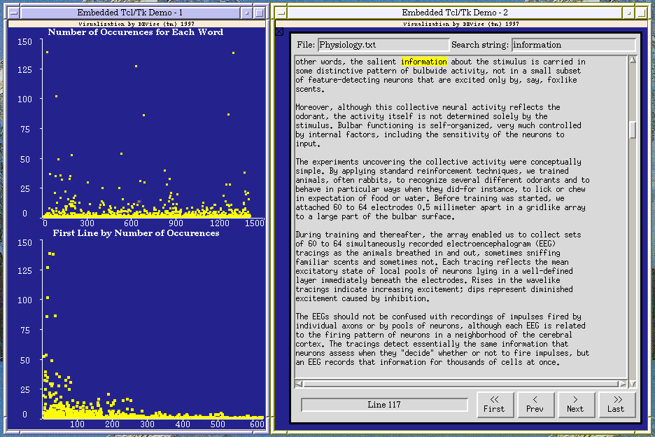

Word Count Data Example (using an Embedded Tk Window)

Input Data
The input data:
- consists of a list of words in a document, along with the number of
times the word appears and the number of the line on which it first appears.
- there is also some additional information (text file name and Tcl script
name) that is used to display this data in DEVise.
The input file looks like:
...
although 3 123 /p/devise/demo/dat/etk-demo/Physiology.txt /p/devise/demo/dat/etk-demo/ShowWord.tcl
always 2 183 /p/devise/demo/dat/etk-demo/Physiology.txt /p/devise/demo/dat/etk-demo/ShowWord.tcl
...
Problem
We want to use DEVise to analyze word count data. By using the Embedded
Tk feature of DEVise, we can create a connection between the word count
data and the document itself.
Visualization
Click here to see our model of creating
visualizations.
The visualization is created as follows:
- Define the 'Number of Occurences for Each Word' view (with record ID
as the X axis and the word count as the Y axis).
- Define the 'First Line by Number of Occurences' view (with first line
of occurance as the X axis and word count as the Y axis).
- Define the Embedded Tk view (with fixed values for X and Y, and
Tcl/Tk Window as the shape type). The word from the data (and the
filename of the input document) is passed to
the Tcl script as an argument. The Tcl script knows how to highlight
the given word in the input document.
- Define a hidden view (with record ID as the X axis and word count as
the Y axis). This view is used only to create the cursor that is used
to select a word in the 'Number of Occurences for Each Word' view.
- Create an X-Y cursor from the hidden view to the 'Number of Occurences
for Each Word' view.
- Create a record link from the hidden view to the Embedded Tk view.
Observations
Clicking in the 'Number of Occurences for Each Word' view moves the cursor
to the location on which you clicked. Because of the record link through
the hidden view, only the record corresponding to the selected word is
displayed in the Embedded Tk view. The Tcl/Tk program highlights the
first occurance of this word in the document. The user can use the
controls of the Tcl/Tk program to view other occurances of this word in
the document (the Tcl/Tk program is fully functional even though it is
within a DEVise view).
In the 'First Line by Number of Occurences' view, as one would expect,
the most common word generally have their first occurance near the beginning
of the document. However, one can observe some cases where relatively
common words do not occur until late in the document.